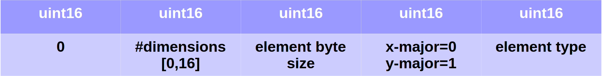

DEN format
Legacy DEN
Within this framework, the DEN format is used to store volume, projection and other types of data. This is a binary format for storing three-dimensional arrays of uint16, float32 or float64 values. It has a fixed header of 6 bytes representing three uint16 values corresponding to the dimensions of the array dimy, dimx, dimz, respectively. The data after the header is aligned in x-major order and all values are encoded little endian. The x-major alignment means that the value representing the position (ix,iy,iz) in the array has a flat index$ ix + iy * dimx + iz * dimx * dimy$.
The DEN or Dennerlein format is named after the German CT researcher, Dr.Ing. Frank Dennerlein.
Problems with legacy format
The type of the data can only be derived from the file size and number of elements represented as given by header. Element size of uint16 is 2 bytes, float32 4 bytes and float64 8 bytes. Thus it is not possible to represent or distinguish two types with 4 bytes element size. Such element must ever be float. This is one limiting factor.
The fact that the order of dimensions in the header is (dimy, dimx, dimz) instead of the more natural (dimx, dimy, dimz) is questionable. This is more common in matrix notation, where we first list the number of rows and then the number of columns. For multidimensional arrays, this is counterintuitive. There is no support for y-major alignment, where matrix data of dimensions (dimy, dimx) would be stored column by column. In addition, a single dimension can have a maximum of 65535 elements.
Fixing number of dimensions to 3 also reduces flexibility of the format. In some situations would be nice to be able to represent 1D arrays or arrays of greater dimensions than 3D.
Extended DEN format
To address problems with legacy DEN format, KCT library implements also extended DEN, which is binary format to store multidimensional arrays of up to 16 dimensions. It follows a concept of small header followed by data entries. Extended DEN files with data are not valid legacy DEN files to be able to distinguish them by parsers. It is due to the fact, that the header of the extended file start with uint16(0).
The extended format preserves the use of little endian encoding and also the concept of a fixed-length header followed by a data set. For the sake of data alignment in memory, we decided to use a header length of 4096 bytes. For now it uses just 74 bytes. First 5 uint16 values are the following. First is 0, then number of dimensions that needs to be less than 16, then byte size of the element, x-major or y-major specifier and type of the element specifier.

They are followed by up to 16 dimension specification values.
Supported element types and byte sizes are listed in the following Java code from DEN file opener, where the element type ids are in comments:
public enum DenDataType { // Ordinal num is the position in the enum // thus for this enum is the ordinal important as its the code in DEX file UINT16(2), // 0 INT16(2), // 1 UINT32(4), // 2 INT32(4), // 3 UINT64(8), // 4 INT64(8), // 5 FLOAT32(4), // 6 FLOAT64(8), // 7 UINT8(1); // 8 private final int byteSize; private DenDataType(int byteSize) { this.byteSize = byteSize; } public int getSize() { return byteSize; } }
Deprecated extended DEN
The original implementation of extended format was simpler and is deprecated.
Extended version implemented in KCT is able to represent data with each dimension up to the uint32_t_max. The header in this format is 18bytes and it starts with (0,0,0) or (0,0,1) and continues by (dimy, dimx, dimz) of uint32_t values. Format with initial part of header (0,0,0) has the same row major alignment of the remaining sequence of data, while in the format with initial part of header (0,0,1) the value representing the position (ix,iy,iz) will have a flat index $iy + ix * dimy + iz * dimx * dimy$ therefore the data are in column major order.